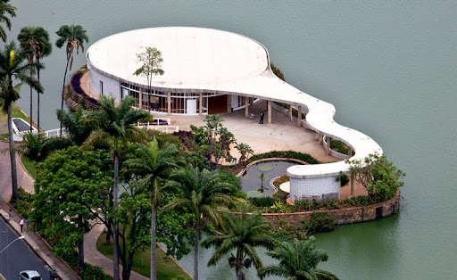

Pampulha – Arte, Arquitetura e Natureza em Belo Horizonte
A região da Pampulha, em Belo Horizonte, é um dos mais belos cartões-postais de Minas Gerais, combinando arquitetura modernista, paisagens naturais e lazer à beira da lagoa. Criada na década de 1940 como um projeto visionário do então prefeito Juscelino Kubitschek, a Pampulha reúne obras icônicas de Oscar Niemeyer, jardins assinados por Burle Marx e obras de arte de Cândido Portinari, formando um dos conjuntos arquitetônicos mais impressionantes do país.
O grande destaque da região é a Igreja de São Francisco de Assis, um símbolo do modernismo brasileiro. Com suas curvas inovadoras, painéis de azulejos pintados por Portinari e paisagismo cuidadosamente planejado, a igreja se tornou um dos marcos mais fotografados da cidade. Outro ponto imperdível é o Museu de Arte da Pampulha, que originalmente foi um cassino e hoje abriga um importante acervo cultural. O conjunto arquitetônico ainda conta com a Casa do Baile, um espaço dedicado à arte e ao design, e a imponente Casa Kubitschek, que preserva a memória do ex-presidente.
A Lagoa da Pampulha, que abraça esses monumentos, é um cenário perfeito para atividades ao ar livre. Suas margens contam com ciclovias, praças e jardins que convidam para caminhadas, passeios de bicicleta e momentos de contemplação. Aos finais de semana, a orla se torna um ponto de encontro para esportistas, famílias e turistas que aproveitam a bela vista e o clima agradável. Além disso, o espaço abriga o Estádio Mineirão e o Mineirinho, duas das maiores arenas esportivas do estado, que recebem grandes eventos esportivos e culturais.
Patrimônio Cultural da Humanidade pela UNESCO, a Pampulha é um dos destinos mais fascinantes de Belo Horizonte, onde história, arte e natureza se encontram em perfeita harmonia. Seja para explorar sua rica arquitetura, caminhar à beira da lagoa ou simplesmente admirar o pôr do sol refletindo em suas águas, a região é um convite para viver a cidade de um jeito especial.
